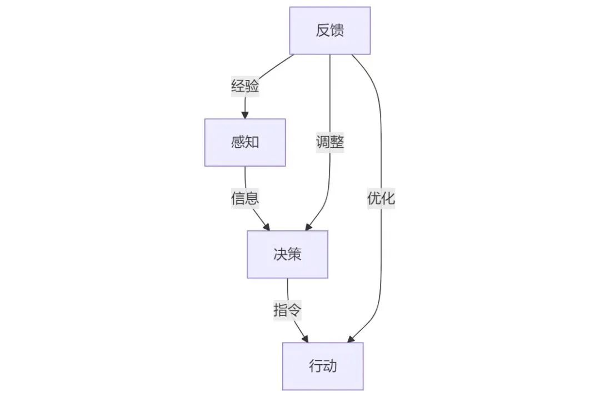

强化学习综述
第一篇
一个具身智能体的行动可以分为“感知-决策-行动-反馈”四个步骤，分别由四个模块完成，并形成一个闭环。
- 感知：传感器，用于获取环境信息，如雷达、深度相机、麦克风。
- 决策：“大模型”，输入目标与指令，输出决策指令（导航路线、动作序列等）。
- VLA：Vision-Language-Action，输出动作
- VLN：Vision-Language-Nevigation，输出路线
- 行动：三种思路：
- 决策调用行动：行动被写成算法以供决策模块调用，缺点泛化能力差
- 决策与行动协同：行动的同时获取实时信息，使决策不断优化，缺点吃算力
- 决策与行动融合：端到端，利用多模态技术发展直接从感知推理出环境变化，以及相应的动作序列。是未来发展的方向。优点泛化能力强，通用。
- 反馈：为上述每一个环节提供反馈。
